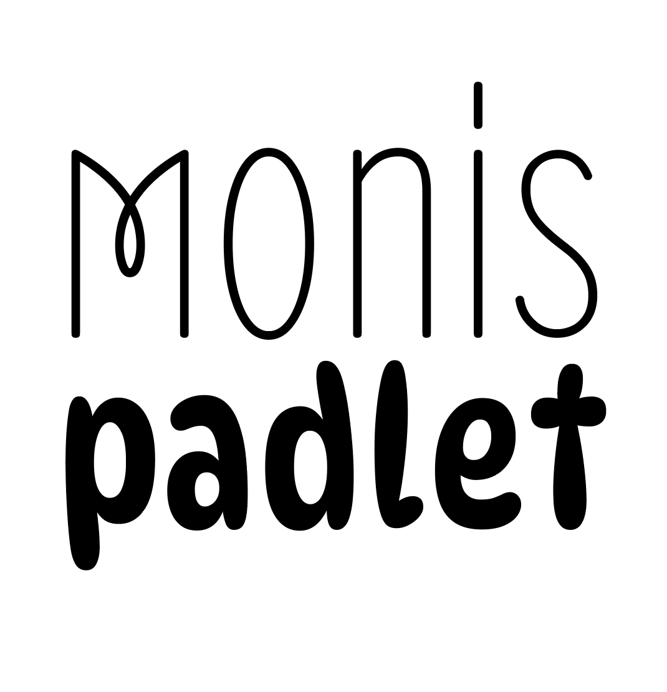

<div class="ui secondary  menu">
  <a class="active" routerLink="board">
    
  </a>
  <div class="right menu">
    <a class="ui item">
      Login
    </a>
  </div>
</div>


<!--routerLinkActive="active"-->


<router-outlet></router-outlet>
